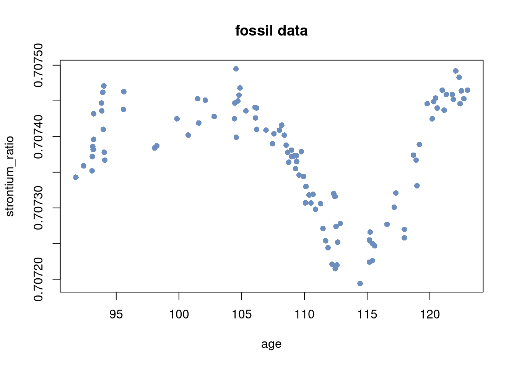
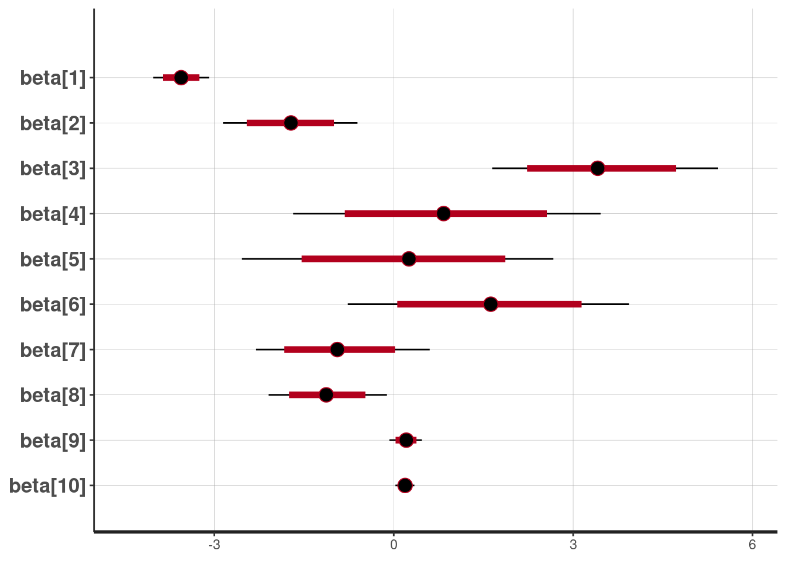
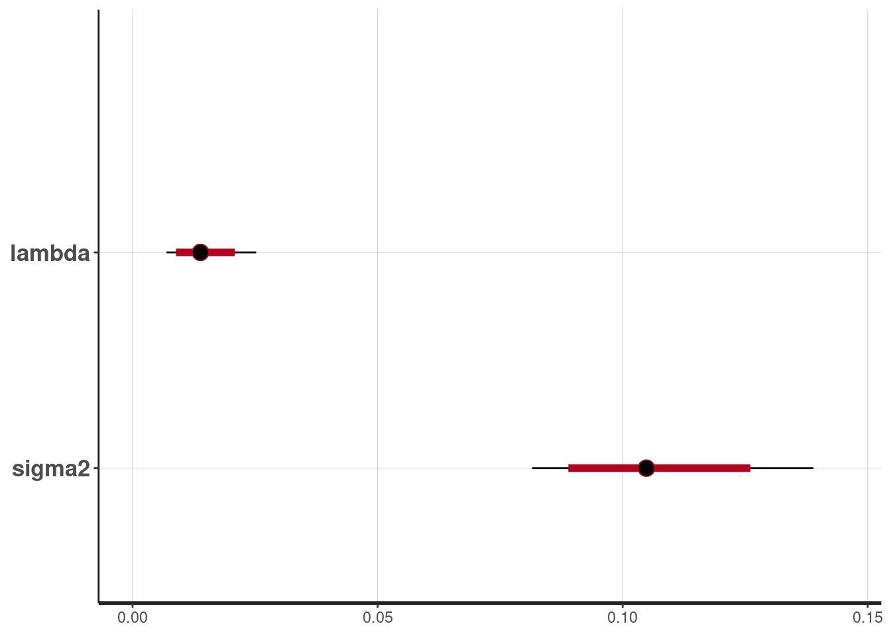
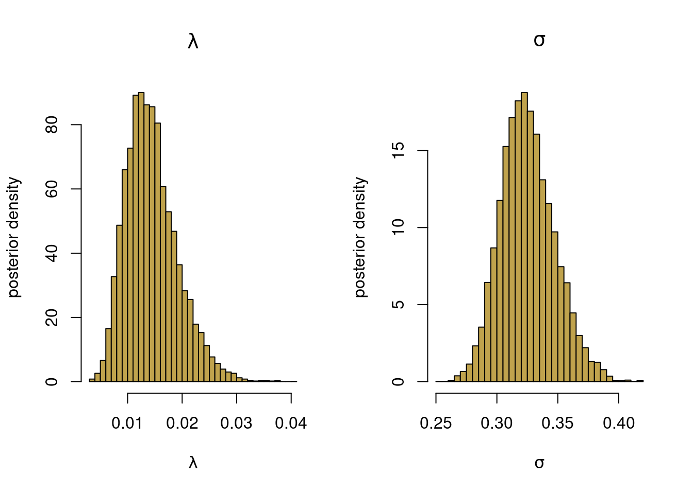

#install.packages("rstan", repos = c('https://stan-dev.r-universe.dev',
# getOption("repos")))
suppressMessages(library(rstan))
options(mc.cores = parallel::detectCores())
rstan_options(auto_write = TRUE)Bayesian nonlinear regression in RStan
Polynomial regression with L2-regularization prior
Model
This notebook illustrate how to do a Bayesian analysis using rstan for the polynomial regression model \[y = \beta_0 + \beta_1 x + \beta_2 x^2 + \ldots + \beta_p x^p + \varepsilon, \quad \varepsilon \overset{\mathrm{iid}}{\sim} N(0,\sigma^2).\]
Prior
An L2-prior (ridge) is used to prevent overfitting \[\beta_j \vert \sigma^2 \overset{\mathrm{iid}}{\sim} N\Big(0,\frac{\sigma^2}{\lambda^2}\Big), \] where the regularization parameter \(\lambda\) is learned from the data. The regularization parameter \(\lambda\) is a precision (inverse variance) and we will here instead parameterize it as a variance: \(\psi^2 = 1/\lambda\) in the sampling and use the prior \[ \psi^2 \sim \mathrm{Inv-}\chi^2(\omega_0,\psi_0^2).\] The intercept is not regularized and is given a separate prior \[\beta_0 \sim N(0,\sigma_{0,\mathrm{intercept}}^2)\] The noise variance is assign the usual scaled inverse chi-squared prior \[ \sigma^2 \sim \mathrm{Inv-}\chi^2(\nu_0,\sigma_0^2).\]
Rstan: Install, load, use all cores and no recompile unless needed
Load the fossil data 1
# Read and transform data
rawdata <- read.csv(
file = "https://github.com/mattiasvillani/introbayes/raw/main/data/fossil.csv"
)
n = dim(rawdata)[1]
y = rawdata$strontium_ratio
x = rawdata$age
plot(x, y, pch = 16, ylab = "strontium_ratio", xlab = "age", col = colors[1],
main = "fossil data")
Standardize the covariates and the response variable
mean_y = mean(y)
mean_x = mean(x)
sd_y = sd(y)
sd_x = sd(x)
y = (y - mean_y)/sd_y
x = (x - mean_x)/sd_xSet up covariate matrix from 10 degree polynomial
degree = 10 # polynomial degree
X = matrix(rep(0, n*degree), n, degree)
for (k in 1:degree){
X[, k] = x^k
}
p = dim(X)[2]Setup stan data structures and set prior hyperparameters values
data <- list(n = length(y), p = p, X = X, y = y)
prior <- list(sigma0_intercept = 100, nu0 = 2, sigma20 = 0.11, omega0 = 10,
psi20 = 100)Set up stan model (can also be defined in a separate file)
l2regression = '
data {
// data
int<lower=0> n; // number of observations
int<lower=0> p; // number of covariates
matrix[n, p] X; // covariate matrix
vector[n] y; // response vector
// prior
real<lower=0> sigma0_intercept;
real<lower=0> nu0;
real<lower=0> sigma20;
real<lower=0> omega0;
real<lower=0> psi20;
}
parameters {
real beta0; // intercept
vector[p] beta; // regression coefficients
real<lower=0> sigma2; // error standard deviation
real<lower=0> psi2; // psi2 = 1 / lambda, in the usual L2-regularization
}
model {
beta0 ~ normal(0, sigma0_intercept);
sigma2 ~ scaled_inv_chi_square(nu0, sqrt(sigma20));
psi2 ~ scaled_inv_chi_square(omega0, sqrt(psi20));
beta ~ normal(0, sqrt(sigma2*psi2));
y ~ normal(beta0 + X * beta, sqrt(sigma2));
}
generated quantities {
real<lower=0> lambda = 1/psi2;
}
'Run the HMC sampling and summarize the results
nDraws = 5000
fit = stan(model_code = l2regression, data = c(data, prior), iter = nDraws)Warning: There were 9748 transitions after warmup that exceeded the maximum treedepth. Increase max_treedepth above 10. See
https://mc-stan.org/misc/warnings.html#maximum-treedepth-exceededWarning: Examine the pairs() plot to diagnose sampling problemsWarning: Bulk Effective Samples Size (ESS) is too low, indicating posterior means and medians may be unreliable.
Running the chains for more iterations may help. See
https://mc-stan.org/misc/warnings.html#bulk-esss <- summary(fit, probs = c(0.025, 0.975))
s$summary # all chaines merged mean se_mean sd 2.5% 97.5%
beta0 -0.009115847 0.0026242569 0.062177521 -0.13343853 0.10956565
beta[1] -3.554139295 0.0114567201 0.236779772 -4.01999292 -3.08857470
beta[2] -1.726458052 0.0326027333 0.571175403 -2.85512617 -0.60628606
beta[3] 3.440961951 0.0630698319 0.961524905 1.64653538 5.42447881
beta[4] 0.856707606 0.0826109165 1.319824326 -1.68211406 3.45873500
beta[5] 0.221057544 0.0908680885 1.322587479 -2.53816957 2.66929013
beta[6] 1.612013278 0.0796177079 1.209490711 -0.76803832 3.93523226
beta[7] -0.925296671 0.0487877126 0.725547343 -2.30176611 0.60124665
beta[8] -1.118592778 0.0338444710 0.498731760 -2.09198461 -0.11363884
beta[9] 0.208518095 0.0087882003 0.136619875 -0.07319182 0.46991120
beta[10] 0.188669446 0.0053150776 0.079427021 0.02787719 0.34513072
sigma2 0.106365537 0.0004279480 0.014593268 0.08153602 0.13890469
psi2 77.439151050 0.8615942348 27.756904755 39.64783061 144.31660814
lambda 0.014425949 0.0001438554 0.004733304 0.00692921 0.02522206
lp__ 23.419794804 0.0706654878 2.625518986 17.48296722 27.58688756
n_eff Rhat
beta0 561.3764 1.002232
beta[1] 427.1384 1.010471
beta[2] 306.9241 1.002057
beta[3] 232.4223 1.013322
beta[4] 255.2451 1.003242
beta[5] 211.8488 1.012909
beta[6] 230.7734 1.005242
beta[7] 221.1620 1.011775
beta[8] 217.1494 1.007456
beta[9] 241.6729 1.010494
beta[10] 223.3147 1.008848
sigma2 1162.8483 1.001505
psi2 1037.8546 1.002329
lambda 1082.6209 1.003194
lp__ 1380.4339 1.001647The posterior mean and 80% and 95% credible intervals for the \(\beta\) parameters
plot(fit, pars = c("beta"))ci_level: 0.8 (80% intervals)outer_level: 0.95 (95% intervals)
and for \(\lambda\) and \(\sigma^2\)
plot(fit, pars = c("lambda", "sigma2"))ci_level: 0.8 (80% intervals)outer_level: 0.95 (95% intervals)
Extract the draws for \(\lambda\) and \(\sigma^2\) and plot histograms.
postsamples <- extract(fit, pars = c("lambda", "sigma2"))
par(mfrow = c(1,2))
hist(postsamples$lambda, 50, freq = FALSE, col = colors[2],
xlab = expression(lambda), ylab = "posterior density",
main = expression(lambda))
hist(sqrt(postsamples$sigma2), 50, freq = FALSE, col = colors[2],
xlab = expression(sigma), ylab = "posterior density",
main = expression(sigma))
Plot the fit with 95% credible bands
nThin = 10 # Only keep every nThin draws (for storage)
m = floor(nDraws/nThin)
nGrid <- 200 # Number of gridpoints in x-space
postsamples <- extract(fit)
nDraws <- dim(postsamples$beta)[1]
xGrid <- seq(min(x), max(x), length = nGrid)
XGrid = matrix(rep(0, nGrid*degree), nGrid, degree)
for (k in 1:degree){
XGrid[, k] = xGrid^k
}
postSampRegLine <- matrix(rep(0, m*length(xGrid)), m, length(xGrid))
predSamp <- matrix(rep(0, m*length(xGrid)), m, length(xGrid))
for (i in 1:m){
j = 1 + (i-1)*nThin
postSampRegLine[i,] <- postsamples$beta0[j] + XGrid %*% postsamples$beta[j,]
predSamp[i,] <- postSampRegLine[i,] + rnorm(1, 0, sqrt(postsamples$sigma2[i]))
}
plot(x, y, pch = 16, col = "darkgray", cex = 0.5, ylim = c(-3,3),
xlab = "age (standardized)", ylab = "strontium ratio (standardized)")
lines(xGrid, colMeans(postSampRegLine), type = "l", col = colors[3])
lines(xGrid, apply(postSampRegLine, 2, quantile, probs = c(0.025) ), type = "l", col = colors[1])
lines(xGrid, apply(postSampRegLine, 2, quantile, probs = c(0.975) ), type = "l", col = colors[1])
lines(xGrid, apply(predSamp, 2, quantile, probs = c(0.025) ), type = "l", lty = 2, col = "black")
lines(xGrid, apply(predSamp, 2, quantile, probs = c(0.975) ), type = "l", lty = 2, col = "black")
legend(x = "bottomleft", inset=.05,
legend = c("Data", "Posterior mean", "C.I.", "P.I."), lwd = c(3,3,3,3),
pch = c(19,NA,NA,NA), lty = c(0,1,1,2),
col = c("darkgray", colors[3], colors[1], "black"), box.lty=1
)
Footnotes
Chaudhuri, P. and J. S. Marron (1999). Sizer for exploration of structures in curves. Journal of the American Statistical Association↩︎